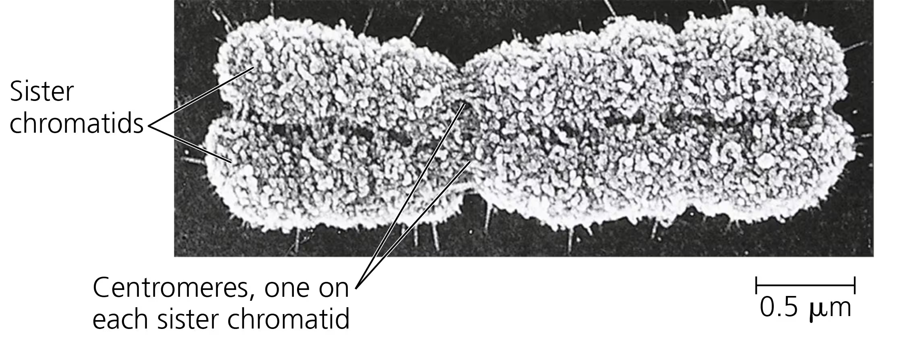
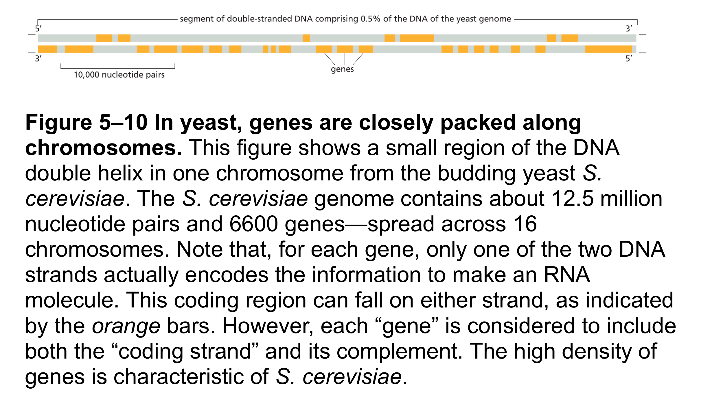

遺傳學核心名詞階層與教學串連：DNA、基因、等位基因、染色質、染色體與基因體
113 臺北市立成功高中與 114 國立羅東高中教甄筆試不約而同考了同一件事：如何向高中生釐清這群容易混淆的遺傳學專有名詞，並串成一條因果清楚的教學主軸？
DNA 是儲存遺傳密碼的化學分子，基因是 DNA 上能表現多肽或功能性 RNA 的功能片段，等位基因是同源染色體相同基因座上同一基因的不同版本；DNA 與蛋白質結合成染色質，細胞分裂時高度凝縮成染色體，而單套完整染色體（或整個細胞）所攜帶的全部遺傳資訊總和稱為基因體；基因表現後決定生物的性狀，個體呈現的特定形式即為表徵。
延伸對照：孟德爾「遺傳因子 → DNA」科學史與高中 6 版定義差異見 遺傳因子、基因、等位基因與染色體；間期染色體實體辨析見 染色質與染色體本質；羅東高中其餘兩子題見 同源染色體 vs. 雙套與 AaBb 自交互換判讀。
01 八個核心專有名詞：課本定義與高中生易懂說明
教甄寫名詞解釋時，同時給出「精準學術定義」與「學生聽得懂的功能定位」最容易拿滿分。下表統一採用臺灣教育部《生命科學名詞》審定譯名（特別留意 character＝性狀、trait＝表徵）：
| 名詞（英文） | 教科書正式定義 | 學生易懂說明 |
|---|---|---|
| DNA （deoxyribonucleic acid） |
由兩條去氧核糖核苷酸鏈構成的雙股螺旋多核苷酸，以 A、T、G、C 鹼基序列儲存與傳遞遺傳資訊。 | 構成基因與染色體的「化學本體」，寫有遺傳密碼的分子長鏈。 |
| 基因 （gene） |
DNA 分子上可被表現並產生功能性產物（多肽或功能性 RNA，如 tRNA、rRNA）的特定序列區域；分子層次常涵蓋啟動子等必需調控區（Campbell 13e Ch17；Alberts ECB6 Ch05）。 | DNA 長鏈上有功能意義的段落；一條染色體的 DNA 上通常帶有數百至數千個基因。 |
| 等位基因 （allele） |
同一基因的替代版本，位於一對同源染色體相對應的基因座（locus）；分子上為該段 DNA 核苷酸序列的細微差異（Campbell 13e Ch14）。 | 同一基因座上的不同版本，如豌豆花色基因的紫花等位基因 P 與白花等位基因 p。 |
| 染色質 （chromatin） |
構成真核染色體的材料，即線性 DNA 與組蛋白及其他結構／調控蛋白的複合體；間期呈 10–30 nm 鬆散纖維分散於核中（Campbell 13e Ch12；Becker 10e Ch16）。 | DNA 與蛋白質結合後的「鬆散纖維狀態」，方便酵素靠近進行複製與轉錄。 |
| 染色體 （chromosome） |
攜帶遺傳資訊的獨立載體構造；每條真核染色體（複製前）含一條極長線性 DNA 與大量蛋白質，分裂期高度凝縮成顯微鏡下可見的條狀結構（Campbell 13e Ch12）。 | 把超長 DNA（單一人類細胞 DNA 伸展約 2 公尺）打包收納、確保細胞分裂時精準分配的載體。 |
| 基因體 （genome） |
一個細胞或生物體一套完整染色體所攜帶的全部遺傳資訊總和（Alberts ECB6 Ch05；Campbell 13e Ch12 亦泛指一個細胞的全部 DNA）。 | 整個物種或細胞的全部遺傳資料庫（如人類單套 23 條染色體合計約 3.1 × 10⁹ 對核苷酸）。 |
| 性狀 （character） |
生物個體間可變化、可比較的可遺傳特徵向度（Campbell 13e Ch14；Brooker Genetics 8e Ch03）。 | 比較遺傳時的「項目類別」，例如豌豆的「花色」或「種子形狀」。 |
| 表徵 （trait） |
某一項性狀底下的特定變異或表現形式（Campbell 13e Ch14；臺灣《生命科學名詞》審定譯名）。 | 該項目底下的「具體表現選項」，例如花色這項性狀下的「紫花」或「白花」。 |
02 四層包含階層：DNA、基因、染色體、基因體怎麼釐清？
針對 114 國立羅東高中簡答題 1(1)，高中生最大的困惑是把這四個名詞想像成彼此並列的四個零件。教學時應直接切出「化學分子 → 功能片段 → 單一載體 → 整套資訊總和」四層包含關係：
基因體（Genome：全套完整染色體攜帶的全部遺傳資訊，人類單套 23 條 ≈ 3.1 × 10⁹ bp）
└── 染色體（Chromosome：單一載體＝1 條 DNA ＋ 蛋白質；間期呈染色質，分裂期高度凝縮）
└── DNA（Deoxyribonucleic acid：雙股螺旋去氧核糖核苷酸長鏈）
├── 基因（Gene：能表現多肽或功能性 RNA 的功能片段，位於特定基因座）
│ └── 等位基因（Allele：同源染色體相同基因座上序列微異的不同版本）
└── 非編碼區與結構序列（內含子、基因間區、端粒、中節等）
| 層次 | 名詞 | 組成重點 | 給學生的區分句 |
|---|---|---|---|
| 1. 化學材質 | DNA | 去氧核糖核苷酸雙股螺旋 | 構成遺傳物質的化學分子本身 |
| 2. 功能片段 | 基因 | 編碼區＋啟動子等調控序列 | DNA 上有功能意義的一段；1 條 DNA 含數百至數千個基因 |
| 3. 獨立載體 | 染色體 | 1 條線性 DNA（複製前）＋ 組蛋白等蛋白 | 把整條長 DNA 加蛋白質打包而成的單一分配結構 |
| 4. 資訊總和 | 基因體 | 全套染色體攜帶的全部遺傳資訊 | 一個物種或細胞所有染色體所含遺傳資訊的總集合 |
Alberts ECB6 Ch05 將真核基因體精確定義為「一套完整染色體（n）所攜帶的全部遺傳資訊（人類約 3.1 × 10⁹ 對核苷酸）」；Campbell 13e Ch12 則在細胞分裂章節先以「一個細胞的 DNA，即其遺傳資訊」導入。高中教學可說「生物體一套完整染色體（或整個細胞）所含全部遺傳資訊總和」，並適度補充真核細胞尚有粒線體與葉綠體的核外 DNA，就能兼顧易懂與嚴謹。
03 染色質 vs. 染色體，與六名詞教學串連（113 成功高中）
1. 兩組最容易混淆的對照
| 比較項目 | 染色質（chromatin） | 染色體（chromosome） |
|---|---|---|
| 化學組成 | 線性 DNA ＋ 組蛋白與非組蛋白 | 完全相同（由染色質進一步盤繞凝縮而成） |
| 主要時期 | 間期（未分裂，含 DNA 複製期） | 細胞分裂期高度凝縮短粗，光學顯微鏡清晰可見 |
| 功能意義 | 呈 10–30 nm 鬆散纖維，方便酵素接觸進行轉錄與複製 | 緊密打包成獨立條狀載體，避免拉斷並確保精準分配至子細胞 |
2. 六個名詞串成一條完整的教學概念（113 成功高中非選 1 實戰架構）
題目要求將「基因、等位基因、性狀、表徵、染色質、染色體」串連為完整教學概念（2 分），最清楚的敘事動線是「分子包裝狀態 → 載體基因座與版本 → 基因表現到巨觀外觀」，並用單一例子（豌豆花色）收束：
在真核細胞核內，DNA 與組蛋白等蛋白質結合成染色質。細胞處於間期時維持鬆散的染色質纖維，以便進行 DNA 複製與基因轉錄；進入細胞分裂期時，染色質高度凝縮成獨立的染色體，確保遺傳物質精準分配到子細胞。
每條染色體的 DNA 上排列著數百至數千個基因，各自位於固定基因座；在一對同源染色體的相同基因座上，同一基因因核苷酸序列微小差異而有不同版本，稱為等位基因（例如控制豌豆花色酵素的紫花等位基因 P 與白花等位基因 p）。
基因表現出功能性產物（如合成紫色素的酵素）後，決定生物體的各項性狀（例如「花色」）；個體繼承自雙親的等位基因組合（PP、Pp 或 pp）與環境互動後，最終呈現出具體的表徵（例如「紫花」或「白花」）。
04 經典教科書原圖解析（點擊圖片可全螢幕放大）
 🔍 點擊放大檢視細節
🔍 點擊放大檢視細節

🔍 點擊放大檢視細節 🔍 點擊放大檢視細節
🔍 點擊放大檢視細節
CTAAATCGGT，下方白花等位基因僅第 1 個鹼基不同（ATAAATCGGT）。
🔍 點擊放大檢視細節05 經典教科書原始文獻段落考證
以下英文原文與繁中譯文皆直接回溯自本機 Vault 正式譯本段落（已於原檔建立 #^anchor 區塊連結），未憑記憶改寫。
〔教甄原題出處〕113 臺北市立成功高中第 1 次正式教師甄選初試（非選擇題第 1 題，5 分）；114 國立羅東高中第 1 次教師甄選初試（三、簡答題第 1 題(1)，2 分）。
06 教甄作答與高中教學常見扣分陷阱
- 盲點 1：把基因只定義成「製造蛋白質的 DNA 片段」
過於簡化。務必補上「最終產物可以是多肽，也可以是功能性 RNA（如 rRNA、tRNA）」，才能符合 Campbell 13e Ch17 與 Alberts ECB6 Ch05 的現代定義。 - 盲點 2：說「間期叫染色質、分裂期才變成染色體，兩者成分不同」
錯。兩者化學成分完全相同（皆為 DNA ＋ 蛋白質），差別在於凝縮程度與功能需求（鬆散便於複製轉錄 vs. 凝縮便於精準分配）；更精確地說，間期核內染色體依然各自獨立存在（詳見 染色質與染色體本質）。 - 盲點 3：性狀與表徵混寫，或把紫花與白花說成「兩個基因」
依臺灣《生命科學名詞》，character 譯「性狀」（如花色）、trait 譯「表徵」（如紫花／白花）；紫花與白花在單基因模型中不是兩個基因，而是花色基因的兩種等位基因。
釐清這組基礎名詞階層後，可接著閱讀 《同源染色體 vs. 雙套（2n），與 AaBb × AaBb 自交如何判斷互換？》，一次補齊 114 羅東高中簡答題第 1 題的完整解答與 6 部原文書原圖考證。